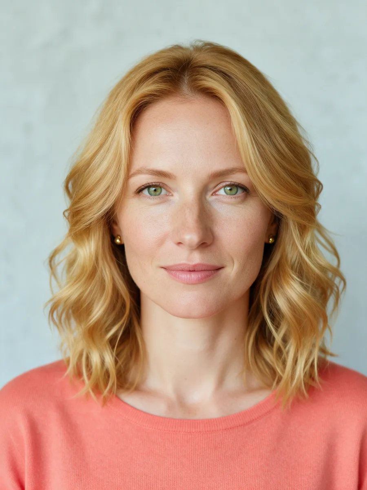
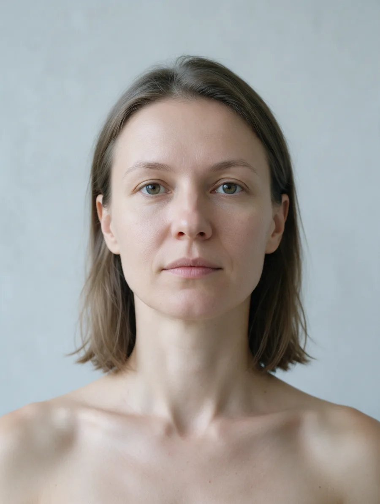

Цветотип и цвет волос, который вам идёт
Четыре сезона, двенадцать подтипов. Определите свой за три шага и посмотрите, какие оттенки и техники окрашивания ему подходят.
Как определить свой цветотип
Нужен дневной свет, лицо без макияжа, чистые сухие волосы без лака и пенки – так видны натуральные цвета.
- Тёплый или холодныйПроверьте признаки в тесте. Тёплый – Весна или Осень, холодный – Лето или Зима.
- Светлый или тёмныйПосмотрите на натуральный цвет волос. Светлые – Весна или Лето, тёмные – Осень или Зима.
- ПримеркаПриложите к лицу вещи тёплых, холодных и очень ярких цветов – или попробуйте примерку ниже.
Тест: пять признаков и цвет волос
Выберите по одному варианту в каждой строке – результат появится здесь.
Лица сезонов
Яркие представительницы каждого сезона в своих цветах. Загрузите своё фото и сравните: чей контраст, подтон и цвет глаз ближе к вашим.

Приложите цвет к обоим портретам: свой цвет освежает лицо, чужой делает его уставшим. Слева от черты – цвета сезона, справа – чужие.
Сезоны и подтипы
Внешность, одежда, металлы и главное для окрашивания – какие оттенки волос подходят и каких избегать.
Примерка цвета
Так проверяют цветотип вживую: к лицу прикладывают ткань и смотрят, что происходит с кожей и глазами.

Сезон
Цвета сезона
Цвета, которых сезону лучше избегать
Точный оттенок подберём на консультации
Перед окрашиванием смотрю кожу, глаза и натуральный цвет при дневном свете, договариваемся о результате, и цену я называю до начала работы.